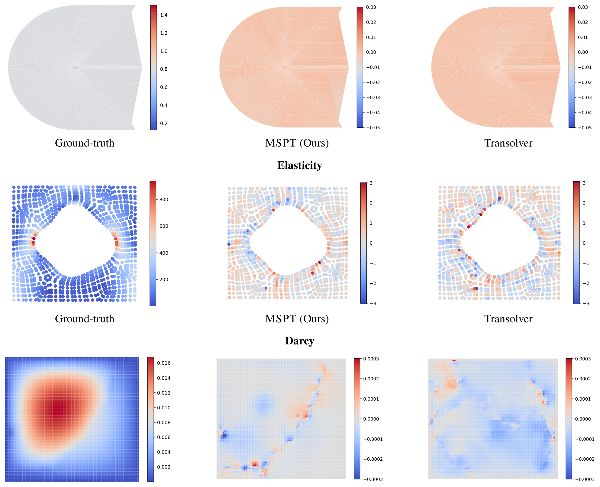

MSPT: can a Transformer model million-point physics without all-pairs attention?
The short version. A partial differential equation (PDE) surrogate predicts a physical field, such as pressure or velocity, without running the original simulator every time. MSPT asks whether such a surrogate can use Transformer attention on irregular meshes with hundreds of thousands or millions of spatial points, where full self-attention would compare every point with every other point. Its answer is Parallelized Multi-Scale Attention (PMSA): each point attends to nearby points inside a spatial patch and also attends to pooled patch summaries called supernodes. The patches come from a ball tree, a spatial partitioning tree that keeps nearby points close in the reordered sequence. The paper's main evidence is strongest when the comparison is like-for-like: among single-branch models, meaning models that do not split the domain into separate surface and volume branches, MSPT is best on three of six standard PDE benchmarks (Airfoil, Pipe, Navier-Stokes), ties Erwin on Plasticity, and is the best single-branch model on ShapeNet-Car and AhmedML. The caveat is just as important: the original two-branch Anchored-Branched Universal Physics Transformer (AB-UPT) field-error numbers are lower on the large aerodynamic datasets, and Erwin or Transolver is better on some standard PDE columns. The efficiency result is therefore not "MSPT is best everywhere"; it is "local patches plus pooled global tokens give a strong single-branch accuracy and memory trade-off at large scale."

1. Motivation: why is full attention the wrong primitive?
Physics surrogates need two kinds of information at once. Local neighborhoods carry sharp changes such as stress concentration, boundary layers, or pressure variation near a surface. Long-range context carries constraints such as incompressibility, far-field boundary conditions, or the global geometry that determines drag.
Full self-attention gives every point direct access to every other point, but it costs $O(N^2)$ pairwise comparisons. That is already expensive for a 32,186-point ShapeNet-Car mesh. It is not a practical default for AhmedML, whose samples are described as about $2\times 10^7$ cells.
Q: Why not use only local attention?
Guide: local attention is cheap because each point only compares against nearby points, but the missing information is exactly what lies outside that neighborhood.
A: A purely local model can preserve fine detail, but information moves across the domain only by stacking many layers. That is a poor fit for fluid problems where pressure or force consistency depends on distant regions. MSPT keeps the cheap local calculation, then adds a coarse global channel through pooled supernodes.
Takeaway: The problem is not attention itself; it is choosing the wrong resolution for every interaction.
2. Contributions: what the paper actually adds
The authors state three contributions. First, they propose PMSA, an attention mechanism that computes patch-level local attention and cross-patch global attention to pooled tokens inside a unified operation. Second, they build MSPT, a multi-block Transformer that handles arbitrary geometries by using ball-tree domain partitioning and hierarchical pooling. Third, they evaluate the model on standard PDE benchmarks and large computational fluid dynamics (CFD) datasets, where CFD means numerical modeling of fluid flow around objects.
The useful reader inference is that MSPT is a two-scale approximation. It treats high-frequency information as local and low-frequency information as globally communicable after pooling. That approximation is plausible for many PDE surrogates, but it is not free. If a task needs long-range information at fine spatial resolution, pooling can hide the needed detail.
How to read "state of the art" in this page
Whenever this page says MSPT leads, it names the table and the comparison set in the same sentence. On standard PDEs, that means leads or ties four of six columns. On ShapeNet-Car and AhmedML, that means leads among single-branch rows.
3. Datasets and metrics: what is being predicted?
The task is neural operator learning: given geometry, coordinates, and available physical descriptors, predict the target physical field at each point. The main metric is relative $L_2$ error, which divides prediction error by the norm of the ground-truth field. Lower relative $L_2$ is better.
| Geometry | Benchmark | Dim | #Nodes |
|---|---|---|---|
| Point Cloud | Elasticity [20, 24] | 2D | 972 |
| Structured | Plasticity [20, 24] | 2D+Time | 3,131 |
| Airfoil [20, 24] | 2D | 11,271 | |
| Pipe [20, 24] | 2D | 16,641 | |
| Regular Grid | Navier-Stokes [20, 24] | 2D+Time | 4,096 |
| Darcy [20, 24] | 2D | 7,225 | |
| Unstructured | ShapeNet Car [5, 38] | 3D | 32,186 |
| AhmedML [3] | 3D | 2 × 107 |
The CFD tables add design-oriented metrics. ShapeNet-Car reports relative $L_2$ on volume fields, relative $L_2$ on surface fields, relative $L_2$ on drag coefficient $C_D$, and Spearman rank correlation $\rho_D$ for the drag ranking. AhmedML reports volume and surface relative $L_2$.
4. Pipeline: partition, pool, attend, repeat
The MSPT block starts by imposing a spatial ordering. On irregular point clouds or meshes, it builds a balanced ball tree from coordinates, traverses the leaves in depth-first order, and forms contiguous patches in that reordered sequence. This step is computed once per input sample and reused across Transformer blocks.

| Stage | Input | Operation | Output | Why it exists |
|---|---|---|---|---|
| Embed points | Coordinates and geometric descriptors | Concatenate raw features and map them with a shared embedding MLP | Hidden features $\mathbf{H}\in\mathbb{R}^{N\times F}$ | Put coordinates and physical descriptors in the same feature space. |
| Partition | Point set $\mathcal{P}$ | Use ball-tree ordering on irregular inputs, or linear partitioning on naturally ordered regular grids | $K$ patches of length $L$ | Make "patch" mean a compact spatial neighborhood. |
| Pool | Each patch's $L$ token features | Mean pooling, max pooling, or learned linear projection into $Q$ supernodes | $KQ$ global supernodes | Compress each local region into a coarse message for global communication. |
| Attend | One patch plus all supernodes | Run multi-head attention on the concatenated sequence | Updated local tokens and updated supernodes | Let each point see nearby detail and coarse global context in one operation. |
| Decode | Final hidden features | Use a task-specific head in the final block | Predicted pressure, velocity, stress, or deformation fields | Return a field value at each point. |
Q: Why can a few pooled tokens carry global information?
A: They do not carry every detail. They carry a coarse summary of each patch. That is enough when distant interactions mainly need low-frequency context, while nearby tokens still handle fine structure locally.
Takeaway: PMSA is a controlled loss of global detail, not a free replacement for full attention.
5. Method: the two-scale attention written out
Start with points and features:
MSPT partitions those points into $K$ non-overlapping patches of length $L$. Padding is applied when $N$ is not divisible by $L$.
Each patch is compressed into $Q$ supernodes:
For patch $k$, PMSA augments the local patch features with the full supernode set:
Attention is then standard scaled dot-product attention on $\mathbf{Z}_k$:
The reason the method is interpretable is that the attention matrix can be partitioned by token type:
The value matrix is split the same way:
For a local token $i$ in patch $k$, the update is the sum of a local term and a global-supernode term:
Two ways to read Eq. 9
From the local side, the first sum keeps nearby high-frequency structure. From the global side, the second sum lets every point consult a coarse summary of every patch. The approximation is valid when coarse global context is enough for distant regions; it is risky when distant fine detail matters.
In matrix form, PMSA keeps the first $L$ rows of multi-head attention for each augmented patch and stacks the results:
The paper gives the computational cost as:
This is not literally linear in $N$. It still contains a quadratic term. MSPT's practical argument is that $Q/L$ is small, so the quadratic term has a small coefficient, and the local term often dominates at the configurations used in the experiments.
5.1 Pooling operators
For mean pooling, each patch is split into $Q$ sub-patches of size $L/Q$ and each sub-patch becomes one supernode:
Max pooling uses the same sub-patches but takes a componentwise maximum:
The learned projection alternative uses a fixed learned matrix over the patch-token axis:
5.2 Ball-tree locality
A ball tree node stores a subset of points inside a metric ball:
After depth-first leaf traversal, patch $k$ is a contiguous block in the induced permutation $\pi$:
The appendix measures whether those patches are actually compact with within-patch dispersion:
6. Training and configuration: what is disclosed?
For the standard PDE benchmarks and ShapeNet-Car, the paper follows the Transolver training procedure in the Neural Solver Library. For AhmedML, it uses 400 training samples, 50 validation samples, and 50 test samples selected at random. To fit AhmedML inside a single 40 GB A100 GPU, each mesh is partitioned into non-overlapping sub-meshes of 320k points, split as 160k surface points and 160k volume points.
The paper states that LION-trained models use a peak learning rate of $5\times10^{-5}$, weight decay $5\times10^{-2}$, linear warmup over the first 5% of training, and cosine decay to $1\times10^{-6}$. Models not trained with LION use the optimizer and learning-rate settings implemented in the Neural Solver Library.
| Benchmark | Loss | Epochs | Initial LR | Optimizer | Batch size | Layers L | Heads | Channels C | Patches K | Supernodes Q | Pooling |
|---|---|---|---|---|---|---|---|---|---|---|---|
| Elasticity | Relative L2 | 500 | 10-6 | LION [6] | 1 | 8 | 8 | 128 | 32 | 1 | Mean |
| Plasticity | Relative L2 | 500 | 10-6 | LION [6] | 8 | 8 | 8 | 128 | 64 | 1 | Mean |
| Airfoil | Relative L2 | 500 | 10-3 | AdamW [26] | 4 | 8 | 8 | 128 | 106 | 1 | Mean |
| Pipe | Relative L2 | 500 | 10-3 | AdamW [26] | 4 | 8 | 8 | 128 | 64 | 1 | Mean |
| Navier-Stokes | Relative L2 | 500 | 10-3 | AdamW [26] | 2 | 8 | 8 | 256 | 32 | 1 | Mean |
| Darcy | $L_{\mathrm{rL2}}+0.1L_g$ | 500 | 10-6 | LION [6] | 1 | 8 | 8 | 128 | 300 | 1 | Mean |
| Shape-Net Car | $L_v+0.5L_s$ | 200 | 10-6 | LION [6] | 1 | 12 | 8 | 256 | 170 | 1 | Mean |
| Ahmed ML | $L_v+0.5L_s$ | 100 | 10-6 | LION [6] | 1 | 12 | 8 | 256 | 400 | 1 | Mean |
Not stated in the paper: total wall-clock training time, total GPU-hours, and a full cost estimate. The efficiency section reports forward-pass and epoch timings, but those are not a complete training bill.
7. Experiments: where does MSPT win, and where not?
All result tables below keep the paper's printed units. In Tables 2, 3, and 4, lower is better for error columns. In ShapeNet-Car, higher is better for $\rho_D$ because it measures drag-rank preservation.

7.1 Standard PDE benchmarks
| Model | Elasticity | Plasticity | Airfoil | Pipe | Navier-Stokes | Darcy |
|---|---|---|---|---|---|---|
| FNO [20] | / | / | / | / | 15.56 | 1.08 |
| WMT [12] | 3.59 | 0.76 | 0.75 | 0.77 | 15.41 | 0.82 |
| U-FNO [42] | 2.39 | 0.39 | 2.69 | 0.56 | 22.31 | 1.83 |
| geo-FNO [24] | 2.29 | 0.74 | 1.38 | 0.67 | 15.56 | 1.08 |
| U-NO [34] | 2.58 | 0.34 | 0.78 | 1.00 | 17.13 | 1.13 |
| F-FNO [37] | 2.63 | 0.47 | 0.78 | 0.70 | 23.22 | 0.77 |
| LSM [43] | 2.18 | 0.25 | 0.59 | 0.50 | 15.35 | 0.65 |
| Galerkin [4] | 2.40 | 1.20 | 1.18 | 0.98 | 14.01 | 0.84 |
| HT-Net [25] | / | 3.33 | 0.65 | 0.59 | 18.47 | 0.79 |
| OFormer [22] | 1.83 | 0.17 | 1.83 | 1.68 | 17.05 | 1.24 |
| GNOT [14] | 0.86 | 3.36 | 0.76 | 0.47 | 13.80 | 1.05 |
| FactFormer [23] | / | 3.12 | 0.71 | 0.60 | 12.14 | 1.09 |
| ONO [45] | 1.18 | 0.48 | 0.61 | 0.52 | 11.95 | 0.76 |
| Transolver [44] | 0.64 | 0.12 | 0.53 | 0.33 | 9.00 | 0.57 |
| Erwin [47] | 0.34 | 0.10 | 2.57 | 0.61 | N/A | N/A |
| MSPT (Ours) | 0.48 | 0.10 | 0.51 | 0.31 | 6.32 | 0.63 |
| Relative Promotion | -41% | 17% | 4% | 6% | 30% | -10% |
The honest reading is column-wise. MSPT is not best on Elasticity, where Erwin has 0.34 versus MSPT's 0.48. It ties Erwin on Plasticity at 0.10, even though the table's "Relative Promotion" row reads +17% there: that row is measured against a prior-work baseline (Transolver's 0.12), not against the best value in the column, so a +17% can sit next to a tie. It is best on Airfoil, Pipe, and Navier-Stokes. It is not best on Darcy, where Transolver has 0.57 versus MSPT's 0.63. So the standard-benchmark claim is a four-of-six win-or-tie, not a sweep.
7.2 ShapeNet-Car
| Model | Volume ↓ | Surf ↓ | CD ↓ | ρD ↑ |
|---|---|---|---|---|
| Simple MLP | 5.12 | 13.04 | 3.07 | 94.96 |
| GraphSAGE [13] | 4.61 | 10.50 | 2.70 | 96.95 |
| PointNet [33] | 4.94 | 11.04 | 2.98 | 95.83 |
| Graph U-Net [10] | 4.71 | 11.02 | 2.26 | 97.25 |
| MeshGraphNet [32] | 3.54 | 7.81 | 1.68 | 98.40 |
| GNO [19] | 3.83 | 8.15 | 1.72 | 98.34 |
| GALERKIN [4] | 3.39 | 8.78 | 1.79 | 97.64 |
| GEO-FNO [24] | 16.70 | 23.78 | 6.64 | 82.80 |
| GNOT [14] | 3.29 | 7.98 | 1.78 | 98.33 |
| GINO [21] | 3.86 | 8.10 | 1.84 | 98.26 |
| 3D-GEOCA [7] | 3.19 | 7.79 | 1.59 | 98.42 |
| Transolver [44] | 2.07 | 7.45 | 1.03 | 99.35 |
| MSPT (Ours) | 1.89 | 7.41 | 0.98 | 99.41 |
| Relative Promotion | +8.7% | +0.5% | +4.9% | +0.06% |
| AB-UPT [2] | 1.16 | 4.81 | N/A | N/A |
| AB-UPT [2] (repr.) | 2.51 | 7.67 | 2.20 | 97.48 |
MSPT is the best single-branch row in this table, beating Transolver by 1.89 versus 2.07 on volume and 0.98 versus 1.03 on drag coefficient. The surface gain over Transolver is tiny: 7.41 versus 7.45, which should be read as a marginal difference. The original AB-UPT row has lower field errors, 1.16 and 4.81, but it is a specialized two-branch CFD architecture and does not report the drag metrics in this table.
7.3 AhmedML
| Model | Volume ↓ | Surf ↓ |
|---|---|---|
| PointNet [33] | 5.44 | 8.02 |
| Graph U-Net [10] | 4.15 | 6.46 |
| GINO [21] | 6.23 | 7.90 |
| LNO [41] | 7.59 | 12.95 |
| UPT [1] | 2.73 | 4.25 |
| OFormer [22] | 3.63 | 4.12 |
| Transolver [44] | 2.05 | 3.45 |
| Transformer [22] | 2.09 | 3.41 |
| MSPT (Ours) | 2.04 | 3.22 |
| Relative Promotion | +0.49% | +6.67% |
| AB-UPT [2] | 1.90 | 3.01 |
| AB-UPT [2] (repr.) | 2.39 | 4.33 |
The AhmedML volume gain over Transolver is 2.04 versus 2.05, a sub-noise-sized gap in practical terms. The surface result is clearer: 3.22 versus Transolver's 3.45 and Transformer's 3.41. As on ShapeNet-Car, the original AB-UPT field errors are lower at 1.90 and 3.01, while the reproduced AB-UPT row is worse than MSPT.
7.4 Efficiency

| Model | Input mesh size N | GPU memory (GB) | Running time (s/epoch) | Elasticity | Shape-Net Car |
|---|---|---|---|---|---|
| MSPT (Ours) | 1024 | 0.17 | 46.6095 | 0.0048 | 0.9941 |
| 2048 | 0.22 | 46.8275 | |||
| 4096 | 0.33 | 46.6800 | |||
| 8192 | 0.53 | 46.4544 | |||
| 16384 | 0.89 | 47.1659 | |||
| 32768 | 1.65 | 65.0738 | |||
| 100000 | 4.68 | 192.5923 | |||
| 200000 | 9.13 | 365.9022 | |||
| 500000 | 22.49 | 797.7500 | |||
| Transolver [44] | 1024 | 0.13 | 36.5752 | 0.0064 | 0.9935 |
| 2048 | 0.20 | 36.9748 | |||
| 4096 | 0.34 | 37.3330 | |||
| 8192 | 0.63 | 36.5046 | |||
| 16384 | 1.21 | 37.3509 | |||
| 32768 | 2.37 | 41.6690 | |||
| 100000 | 7.05 | 104.3364 | |||
| 200000 | 14.06 | 199.3195 | |||
| 500000 | 34.94 | 547.3848 | |||
| GNOT [14] | 1024 | 0.85 | 54.282 | 0.0086 | 0.9833 |
| 2048 | 1.07 | 55.939 | |||
| 4096 | 1.47 | 60.857 | |||
| 8192 | 2.33 | 67.170 | |||
| 16384 | 4.23 | 112.552 | |||
| 32768 | 7.46 | 209.923 | |||
| ONO [45] | 1024 | 1.47 | 69.759 | 0.0118 | / |
| 2048 | 1.75 | 76.245 | |||
| 4096 | 2.30 | 100.134 | |||
| 8192 | 3.47 | 149.598 | |||
| 16384 | 5.64 | 255.339 | |||
| 32768 | 10.09 | 462.459 | |||
| OFormer [22] | 1024 | 0.63 | 28.147 | 0.0183 | / |
| 2048 | 0.69 | 30.983 | |||
| 4096 | 0.80 | 31.113 | |||
| 8192 | 1.02 | 47.904 | |||
| 16384 | 1.67 | 91.671 | |||
| 32768 | 2.44 | 182.205 | |||
| Galerkin Transformer [4] | 1024 | 0.62 | 26.507 | 0.0240 | 0.9764 |
| 2048 | 0.66 | 26.503 | |||
| 4096 | 0.74 | 27.481 | |||
| 8192 | 0.91 | 37.098 | |||
| 16384 | 1.45 | 67.524 | |||
| 32768 | 2.05 | 129.872 |
Table 8 should not be turned into a blanket runtime win. At matched 32 patches versus 32 Transolver slices, MSPT uses less memory at 500k points, 22.49 GB versus 34.94 GB, but it is slower in seconds per epoch, 797.7500 versus 547.3848. The stronger speed claim comes from the separate Figure 1 setup with 256 patches or slices, where MSPT reports 28 ms versus Transolver's 31 ms.
8. Ablations: does each design assumption hold?
The ablations test three assumptions: patch count controls the local-global trade-off, mean pooling is a good default for supernodes, and ball-tree ordering really does create compact patches. These are mechanism checks, not just leaderboard additions.
8.1 Number of patches
| Number of patches K | 32 | 64 | 128 | 256 | 512 | 1024 |
|---|---|---|---|---|---|---|
| Test Loss | 6.08 | 6.23 | 6.83 | 6.77 | 6.37 | 5.99 |
The curve is not monotonic. Few patches mean large local neighborhoods but fewer supernodes for global communication. Many patches mean more supernodes, but smaller local neighborhoods and more overhead. The best test loss in this sweep is 5.99 at $K=1024$, while the efficiency text says $K=128$ is the best hardware balance for ShapeNet-Car.
8.2 Pooling and supernodes

The pooling ablation supports the lossy-compression caveat. A single supernode can be too small a summary of a patch, but too many supernodes move the method back toward a heavier global attention calculation.
8.3 Patch compactness

| Benchmark | K | Ball-tree ordering | Random ordering | ||||||
|---|---|---|---|---|---|---|---|---|---|
| median | p90 | p99 | max | median | p90 | p99 | max | ||
| Elasticity | 32 | 0.006523 | 0.0475 | 0.3238 | 0.3998 | 0.2035 | 0.2173 | 0.2274 | 0.2312 |
| Plasticity | 64 | 0.00435 | 0.01515 | 0.1136 | 0.1675 | 0.1728 | 0.1909 | 0.1991 | 0.2045 |
| Airfoil | 106 | 0.03324 | 133.3 | 435.9 | 450.6 | 77.3 | 118.3 | 154.3 | 155.2 |
| Pipe | 64 | 0.04324 | 0.1611 | 6.678 | 17.65 | 8.937 | 9.383 | 10.18 | 10.6 |
| Navier-Stokes | 32 | 0.006677 | 0.006677 | 0.006677 | 0.006677 | 0.171 | 0.1829 | 0.1866 | 0.1868 |
| Darcy | 300 | 0.001223 | 0.003719 | 0.05023 | 0.1706 | 0.1672 | 0.1728 | 0.1759 | 0.1905 |
Airfoil is the warning row. Ball-tree ordering has a lower median, 0.03324 versus random 77.3, but its p90, p99, and max are higher than random. The figure and table still support the compact-patch story on most benchmarks, but the evidence is not uniformly better at every percentile for every dataset.
8.4 Additional qualitative evidence
{kind=link}

Q: Do the ablations prove the whole architecture is necessary?
A: They prove something narrower. Patch-count sweeps show the local-global trade-off is real. Pooling sweeps show the supernode summary matters. Dispersion statistics show the ball-tree order usually makes compact patches. Together, they support the mechanism, but they do not isolate every component with a full remove-one-module table.
Takeaway: The ablations validate the main assumptions, while leaving some component-level causality open.
9. Limitations: where the claim should stop
| Boundary | Paper evidence | How to read it |
|---|---|---|
| Not a full sweep | Erwin beats MSPT on Elasticity, and Transolver beats MSPT on Darcy in Table 2. | MSPT is broadly strong, but not uniformly best across standard PDEs. |
| Two-branch CFD baselines remain stronger on field errors | AB-UPT original reports 1.16/4.81 on ShapeNet-Car and 1.90/3.01 on AhmedML, both below MSPT's field errors. | The large-dataset claim should be read as a single-branch result unless a two-branch MSPT variant is evaluated. |
| Pooling is lossy | The method compresses each patch into $Q$ supernodes, and the paper lists improved pooling strategies as future work. | Long-range fine details can be lost if the task does not fit the coarse-global assumption. |
| Patch quality matters | Table 6 checks dispersion and shows mostly compact patches, but Airfoil has high upper-percentile dispersion under ball-tree ordering. | Ball-tree ordering is useful, not magic. Bad patch geometry can weaken the local-attention premise. |
| Runtime depends on setup | Figure 1 reports 28 ms versus 31 ms at 256 patches/slices, while Table 8 reports slower seconds per epoch for MSPT than Transolver at matched 32 patches/slices. | Do not quote a single universal speedup. State the patch/slice setup. |
| Training cost is incomplete | The PDF reports configurations and some timing, but not full wall-clock training time or GPU-hours. | Any cost estimate beyond the printed settings would be a rough inference, not a paper-reported number. |
| Scope of validation | The benchmarks cover selected PDE tasks plus ShapeNet-Car and AhmedML. | More complex multi-physics, time-varying coupled systems, and task-specific branching remain future work. |
Q: What is the easiest overclaim?
A: "MSPT solves million-point physics with linear attention." A careful claim is: MSPT uses a two-scale attention approximation whose measured cost is favorable in the tested regimes, while the formula still contains $N^2Q/L$ and the result depends on patch count and supernode count.
Takeaway: The paper is best read as a strong approximation design, not as a proof that all global physics can be pooled safely.
10. Summary: the useful mental model
In one sentence: MSPT makes attention affordable for large physical point sets by doing expensive detail work locally and cheap global communication through pooled patch summaries.
Three takeaways
- The mechanism is two-scale. Local patch attention keeps fine structure, while supernode attention moves coarse context across the domain.
- The evidence is good but column-specific. MSPT is best on three of six standard PDE columns and ties a fourth (Plasticity), leads among single-branch CFD models, but does not beat every baseline on every metric.
- The main knob is the patch-supernode trade-off. $K$, $L$, and $Q$ jointly decide accuracy, memory, and speed; the paper's ablations show this trade-off rather than removing it.
A practical reading path through the paper is: read Eq. 9 to understand the local-plus-global update, then Table 2 to see where that update helps standard PDEs, then Tables 3 and 4 with the AB-UPT caveat, and finally Table 8 plus Figure 5 to separate memory behavior from runtime behavior.
Sources and figure provenance
- Pedro M. P. Curvo, Jan-Willem van de Meent, Maksim Zhdanov. MSPT: Efficient Large-Scale Physical Modeling via Parallelized Multi-Scale Attention. arXiv:2512.01738v2 [cs.LG], 9 Mar 2026. University of Amsterdam.
- All formulas, tables, benchmark sizes, training settings, and numerical comparisons in this page are taken from the paper PDF and its extracted text. Explanatory framing is reader interpretation from the paper, not an additional experimental claim.
- Page Figure 1 maps to paper Figure 1: PMSA mechanism plus the 500k-point memory and latency comparison against Transolver.
- Page Figure 2 maps to paper Figure 2: the MSPT block with ball-tree partitioning, PMSA, multi-head attention, layer normalization, and MLP.
- Page Figure 3 maps to paper Figure 3: relative $L_2$ error maps for Pipe, Navier-Stokes, and ShapeNet-Car.
- Page Figure 4 maps to paper Figure 5: peak GPU memory and wall-clock runtime per forward pass versus patch count and input resolution.
- Page Figure 5 maps to paper Figure 4: pooling method and number of supernodes per patch.
- Page Figure 6 maps to paper Figure 6: Darcy patch-dispersion histogram under ball-tree ordering versus random ordering.
- Page Figure 7 maps to paper Figure 7: appendix visual comparison for Airfoil, Elasticity, and Darcy.